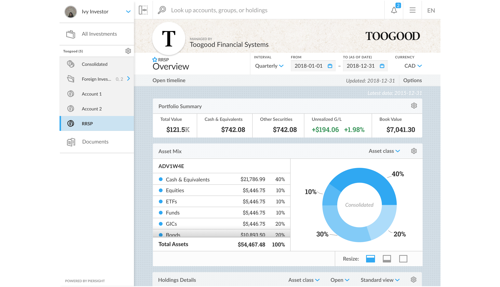
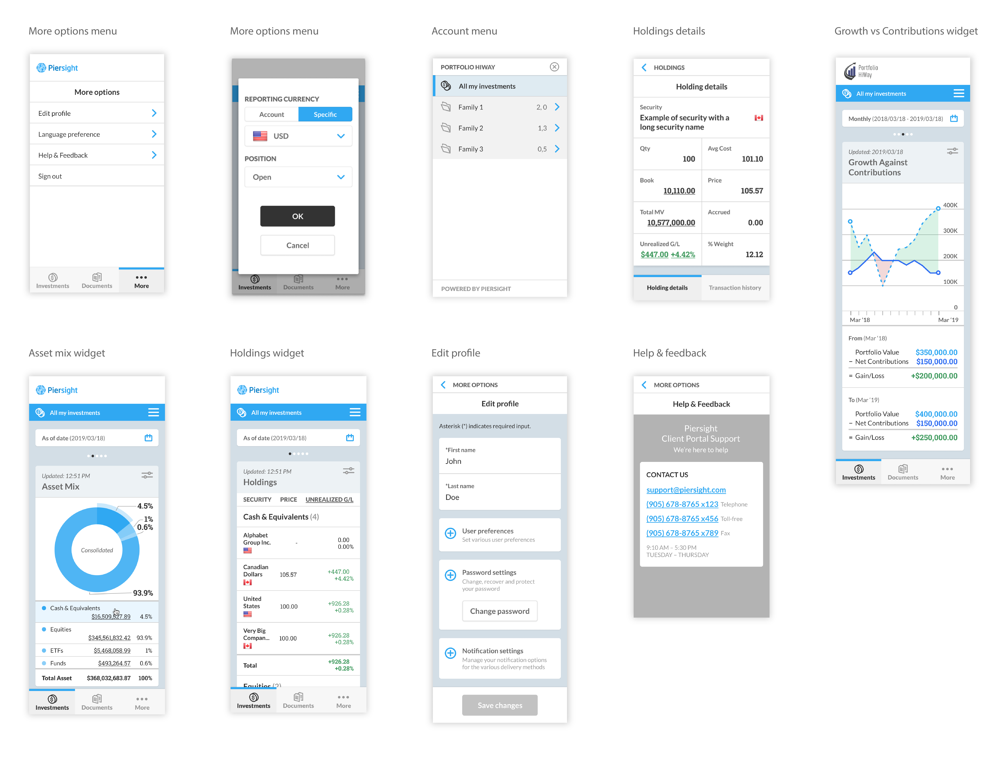
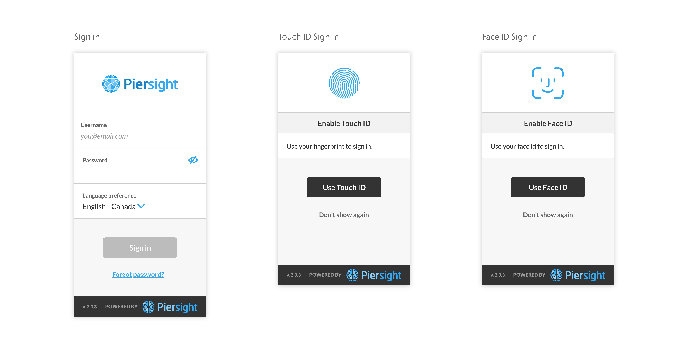

Portfolio Management Mobile App
Piersight is an application which provides the investors with online access to their financial information on a secure, cloud-based platform through the Client Portal Service – giving them a digital investment experience. In this project we designed the mobile app for Piersight to give investors the ability to access their investments using their mobile devices.

My Role
I was one of the two UX designers who worked with CX and development team to finalize the design for this feature.
Challenges
- Prioritizing elements and deciding which elements are important enough to show, in order to conserve screen space
- Using hamburger menu, long scrolling and other mobile interactions to organize content properly
- Keeping user experience as consistent as possible in both desktop and mobile apps

Biometric Authentication
In order to provide a convenient and fast sign in experience and eliminate log-in pain points, we suggest biometric authentication. For security, it was necessary for the app to have a fallback authentication method.
